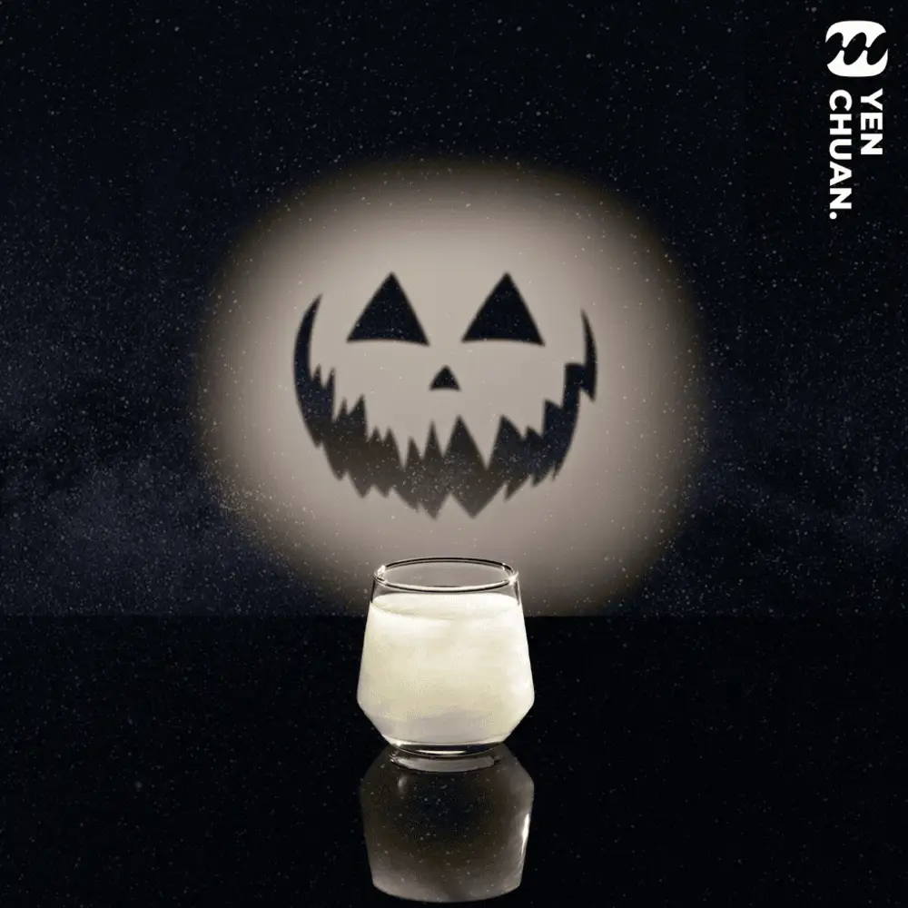
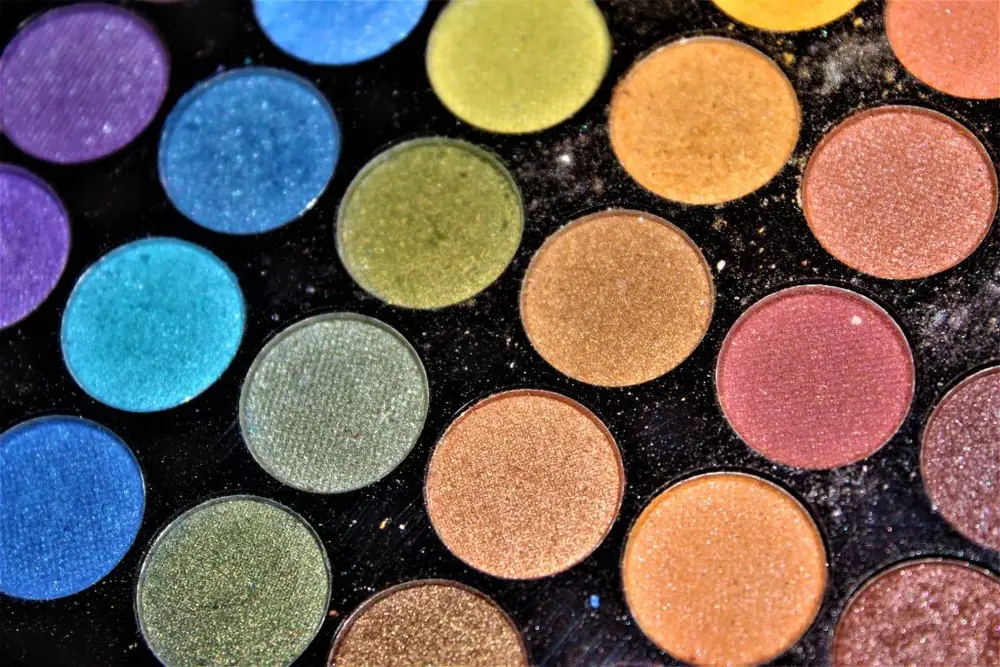
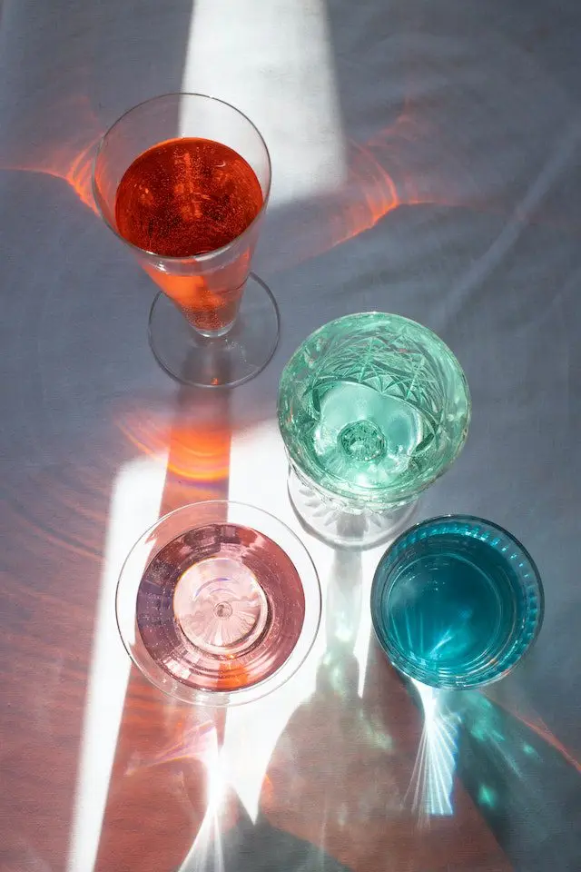
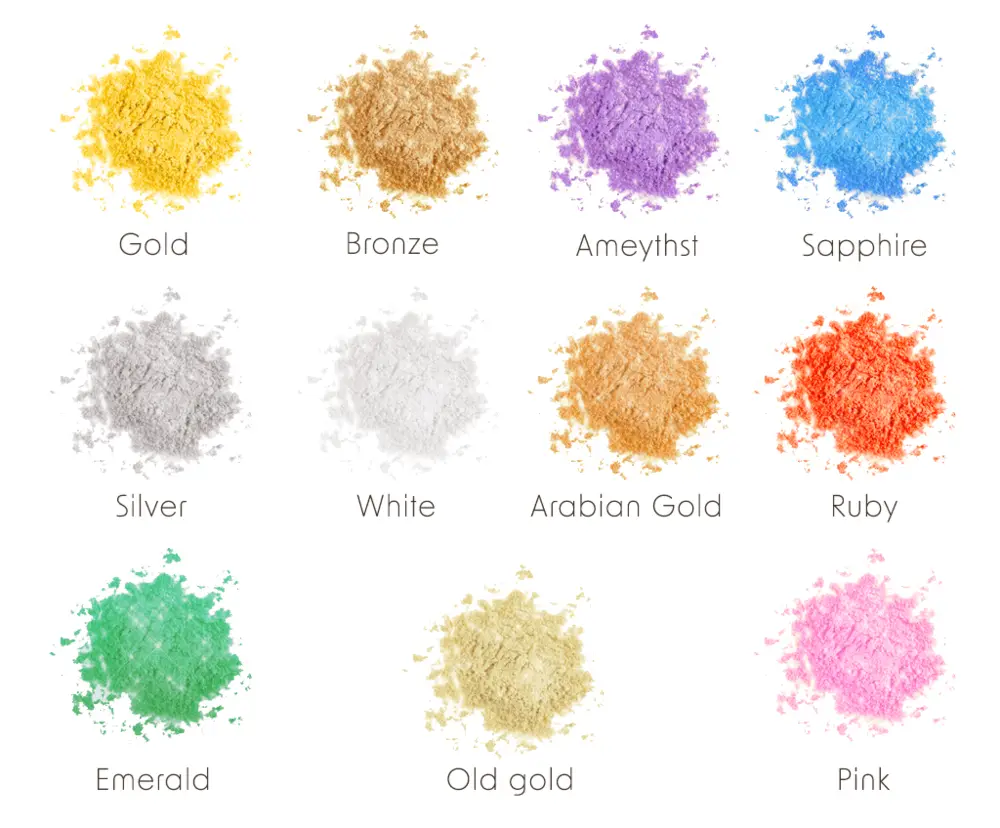

文章 / 飲品配方與資訊
Have a bewitching time with glittery Aurora Stardust!
這篇是英文原文，尚未完成繁體中文翻譯。中文選單與相關商品連結不會切回英文介面。

查看英文原文（尚未翻譯）
Trick or treat! Since it’s Halloween, it’s prime time to dress up and have a fun, spooky night with family and friends.
Want to give your guests a spectacle with some glittery, dazzling drinks? Our Aurora Stardust powders are the perfect choice!

Glittery Aurora Stardust!
Exactly what the name suggests, these delightful powders can turn your drinks into a glittering starfield!
The powders contain edible glitter of various colours, which creates shimmering patterns when light shines on them. When you swirl the powders into your drinks, you can create a glittery vortex of colour!
Weight watchers rejoice: The powders are sugar-free, that means you can enjoy your sparkly drinks guilt free! Moreover, they also contain soluble fibres which help with digestion. Pretty on the eyes, and healthy to boot!
How can you use it?
Since the powders work with light, it’s best to use them with clear drinks rather than thicker drinks with milk. Sparkling water and green tea are both great matches!
As a rule of thumb, around 1 part powder to 6-10 parts liquid should be enough for a great effect.
Fancy a tipple? Try stirring the powders into cocktails of your choice! Want to have some toppings to match? Our star-shaped coconut jelly is perfect for the job!


What colours are there?
Our Aurora Stardust powders are available in the following eye-catching colours:
- Gold
- Silver
- White
- Bronze
- Arabian gold
- Old gold
- Ruby
- Sapphire
- Emerald
- Ameythst
- Pink
Have a dazzling time!
Ready to marvel your family and friends during the Spooky Season? Mix our Aurora Stardust into your drinks, and give them a starry sky in a cup!